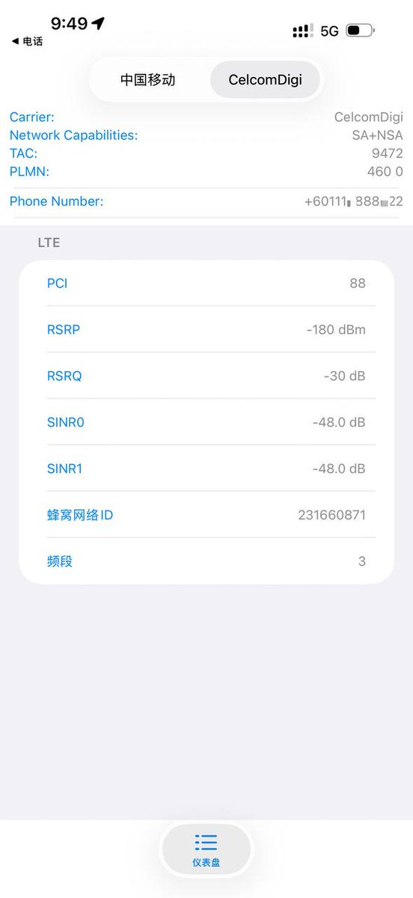
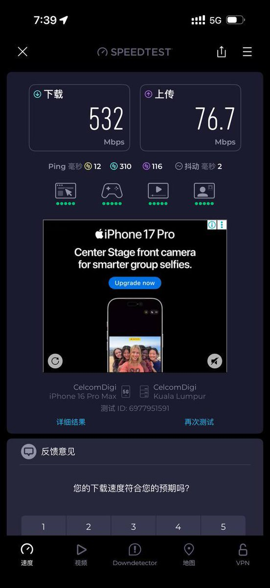
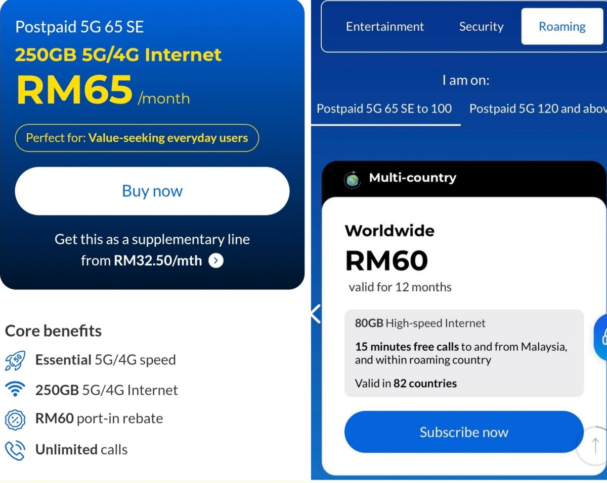
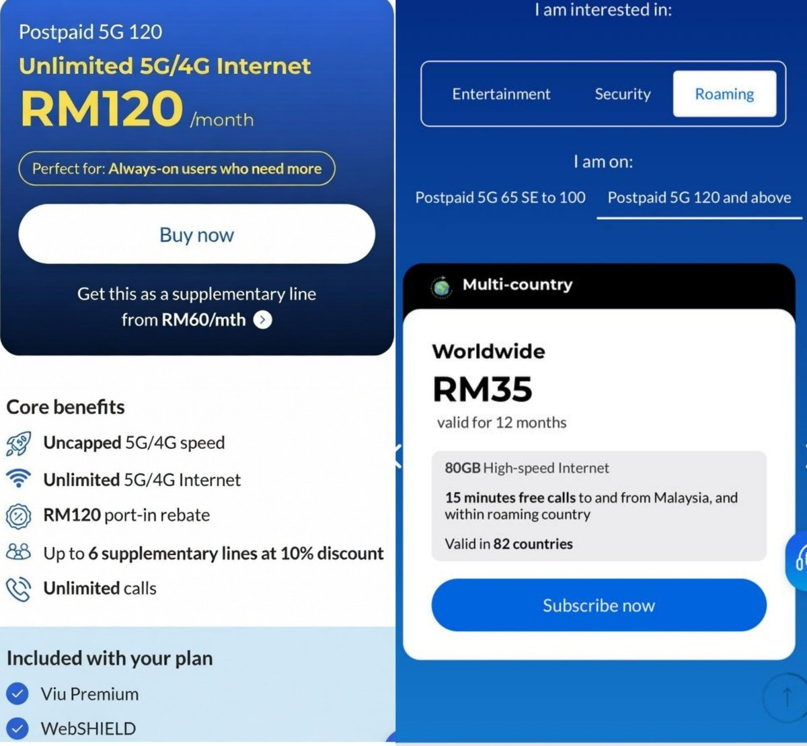

CelcomDigi在国内支持漫游三大运营商（默认为中国联通），可以手动选择当地有NSA 5G的运营商，如中国移动，速度可达千兆。
65RM和120RM的区别在于大马市区人多的地方网速就限制到100Mbps，以及250G和无限量。
在Add-on漫游包（82国80G）后只相差20RM，除非经常在🇲🇾，旅个游我觉得250G也够你爽了🤓
只有预付卡存在连续漫游2个月限制，上台卡不存在。打电话给中国的价格为0.26RM/分钟，具体资费以CelcomDigi为主，感谢叼毛所长 @I00B6 提供测试结果。

65RM和120RM的区别在于大马市区人多的地方网速就限制到100Mbps，以及250G和无限量。
在Add-on漫游包（82国80G）后只相差20RM，除非经常在🇲🇾，旅个游我觉得250G也够你爽了🤓
只有预付卡存在连续漫游2个月限制，上台卡不存在。打电话给中国的价格为0.26RM/分钟，具体资费以CelcomDigi为主，感谢叼毛所长 @I00B6 提供测试结果。




之前错过了马来西亚第一大运营商Celcom的188RM 130G套餐，现在合并成CelcomDigi后略贵，可漫游82国（中国内地三网漫游）。
125RM（65+60）：Postpaid 5G 65 SE（本国250G）+Roaming（82国80G）。
155RM（120+35）：Postpaid 5G 120（马国双不限）+Roaming（82国80G）。 https://t.co/QflX2SC0GZ
125RM（65+60）：Postpaid 5G 65 SE（本国250G）+Roaming（82国80G）。
155RM（120+35）：Postpaid 5G 120（马国双不限）+Roaming（82国80G）。 https://t.co/QflX2SC0GZ